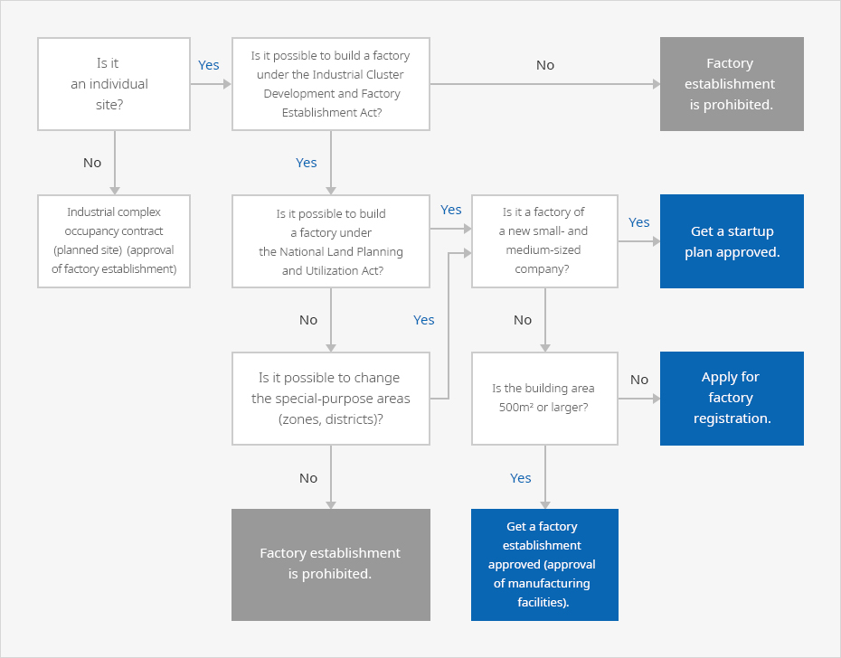

Industrial Sites and Individual Sites
- Home
- Management·Living
- Factory Establishment
- Industrial Sites and Individual Sites
In the case of the manufacturing industry, factories must be built for the purpose of production. The procedures for the establishment, authorization, and permission of factories differ depending on the location. The procedures for authorization and permission of factories are complicated when establishing a factory on an individual site, but special sites, such as industrial complexes—which are planned with the purpose of promoting manufacturing—offer simplified procedures for the establishment, authorization, and permission. Small-sized businesses that do not produce environmentally hazardous materials, in particular, can manufacture without registering factories.
Several factors must be considered to determine whether a factory can be built on a certain site or if there will be any restrictions on land use, factory construction, or environmental regulations.



Industrial Locations and Individual Locations
Korea promotes policies on industrial locations with an aim to efficiently secure areas for production and operation and select quality locations. Its policies recommend establishing factories in industrial complexes for the sake of more systematic and organized management. If it is unsuitable to establish a factory in an industrial complex due to business conditions, land price, or other reasons, it is possible to purchase an individual site and obtain the necessary licenses and permits to establish a factory.
Industrial Complexes
An industrial complex is an area designated and developed under a comprehensive plan to collectively set up industrial facilities and support facilities for workers and users. Complexes offer conveniences by assisting companies in securing factory sites, finding partners and talent through clustering, and efficiently supplying raw materials and parts. Recently, industrial complexes have aimed at mixed-use development, by linking industry-academia-research institutes and connecting and arranging various supporting facilities.
Types of industrial complexes vary depending on the purpose of development. The business category management in relation to factory establishment is different from that of individual sites. First, acceptable business categories differ among industrial complexes, even if the candidates are all manufacturers. Operation and management rules may vary among different complexes; for example, industrial complexes, foreign investment zones (complex type), and national food clusters are managed under a basic management plan, while the Free Economic Zone, the Saemangeum zone, and the INNOPOLIS follow respective regulations. In the case of the Free Trade Zone, the Act on Designation and Management of Free Trade Zones defines the requirements for occupancy.
Individual Locations
An individual location refers to all areas except those specially designated or developed. If a company purchases or leases land outside of an industrial complex or a building in an urban or residential area, it can directly acquire the authorization and permission for altering usage and establish a factory.
If a company selects an individual location for the purpose of manufacturing, it can move into a factory or Type II neighborhood lifestyle facility (manufacturing establishment) prescribed by the Enforcement Decree of the Building Act. Land across the country, however, has special-purpose areas designated under the National Land Planning and Utilization Act. As a result, a company that plans to construct a new building must first check the use of buildings and restrictions on special-purpose areas prescribed by the National Land Planning and Utilization Act and local government ordinances. If a targeted area prohibits factory establishment, it can be changed to a special-purpose area by altering the urban or country management plan. This process, however, should go through deliberation by the Urban Planning Committee. Check the Standards for Factory Location or the Enforcement Decree of the National Land Planning and Utilization for the types of business allowed per special-purpose area.
Advantages and Disadvantages of Industrial Complexes and Individual Locations
| Status | Industrial Complexes | Individual Locations |
|---|---|---|
| Advantages |
|
|
| Disadvantages |
|
|